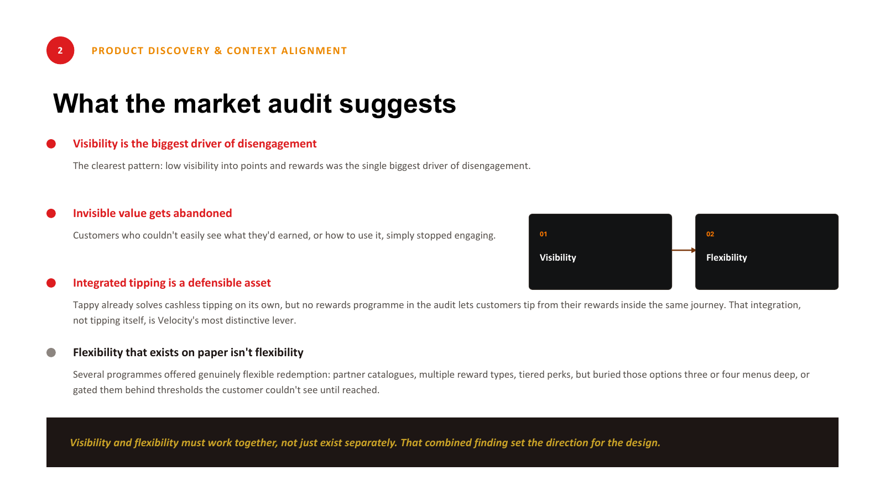

Visibility
Help customers understand their balance and what it is worth.
A fuel-retail loyalty concept that makes rewards easier to understand and use.
I reviewed six loyalty programmes, then designed a concept for reward tracking, redemption, fuel payment, wallet management and digital tipping.
Scope and evidence: Individual concept informed by a six-programme competitor audit and prototype design. It was not tested with customers or piloted in live stations.
Rewards feel valuable when customers can see what they have and how to use it. I explored ways to make value and next steps clearer during a fuel stop.
Help customers understand their balance and what it is worth.
Make earning and redemption options easier to understand.
Explore whether digital tipping fits naturally into the refuelling experience.
I compared Sasol Rewards, BP Rewards, Engen 1App, Discovery Vitality Money, eBucks and Tappy across value visibility, redemption and everyday use.
Lindiwe wants clear value from everyday spending. Jabulani wants an easy way to recognise attendants. Both need clarity and choice.

Needs: clear rewards value and flexible payment options.
Values: control, transparency and practical value.

Needs: a quick way to identify an attendant and choose a tip.
Values: generosity, convenience and choice.
The dashboard gives direct access to fuel payment, rewards, tipping and wallet tasks, reflecting the main station journey.

Keep payment and tipping as separate, quick paths.
Group balance, redemption and withdrawal under Rewards.
Keep payment methods and wallet controls easy to reach.
The journey maps key actions before, during and after refuelling.
Need: see available value at a glance.
NeedDesign response: visible balance and key actions.
Design responseNeed: pay quickly at the pump.
NeedDesign response: a direct payment flow.
Design responseNeed: understand earned value.
NeedDesign response: clear balance and redemption options.
Design responseNeed: choose how to use rewards.
NeedDesign response: explain options and rules.
Design responseDesign response: separate redemption and wallet tasks; test cash-out demand.
Need: thank an attendant without delaying the stop.
NeedDesign response: a short tipping flow.
Design responseDesign response: confirm attendant and amount before tipping.
To test: task order, comprehension, completion time and fit with station operations.
Six programmes were reviewed. The audit synthesis below shows the patterns that informed the concept.

The audit informed these design hypotheses; it did not prove customer demand.
Decision: show fuel and in-store points in one balance.
Why: the audit highlighted fragmented balances and hard-to-find redemption options.
Decision: keep tipping separate, with recipient and amount confirmed.
Why: a separate flow makes tipping intentional rather than hidden in fuel payment.
The screens show attendant identification, fuel payment, rewards and redemption.


Show the balance and its value clearly.
Explore earning across payment methods.
Assess cash-out against programme costs and feasibility.
Test digital tipping with customers, attendants and station operators.
More redemption choice may add cost and complexity.
Tipping must not slow service or confuse users.
The prototype connects balance, redemption, fuel payment and digital tipping. Competitor patterns informed the dashboard and proposed reward choices.
Demonstrates: a connected concept, not proven improvements in redemption or engagement.
Cash-out and tipping may add value, but need customer, commercial and operational validation before MVP prioritisation.